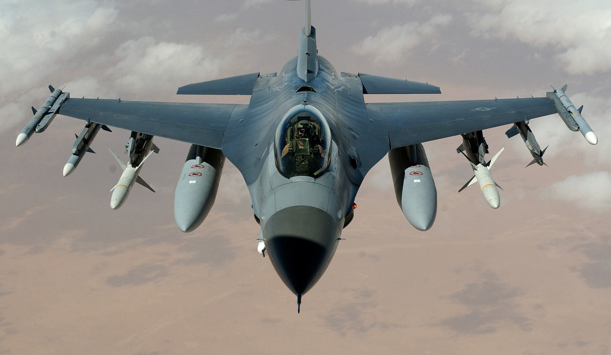

F-16 Fighting Falcon
American Fighter Jet

Among the legendary military aviation designs of the 20th and 21st centuries, the F-16 Fighting Falcon holds a special place – as a symbol of technological breakthrough, doctrinal changes and the evolution of modern air combat. This machine was born during the Cold War, in response to the need to create a light, agile fighter capable of achieving air superiority over a larger enemy. It was to be a complement to the more expensive and heavier F-15 Eagle – a fast, effective fighter, whose main advantage would be maneuverability and low operating costs. However, it soon became clear that the F-16 would not be just a “smaller brother” – but a fully-fledged tool of war, capable of fulfilling almost any role on the modern battlefield.
The project, which began in the 1970s in the United States, has developed over the years into one of the most successful aviation ventures in history. The F-16 has become the foundation of the air forces of many countries around the world - from the United States, through Europe, to Asia and the Middle East. Produced in more than 4,600 units, used by more than 25 countries, this aircraft has proven that simplicity of design combined with innovative technology can give an extraordinary result. The use of the fly-by-wire system - electronic control instead of traditional mechanical systems - has allowed achieving unprecedented maneuverability. The cockpit with a wide canopy provided the pilot with almost unlimited visibility, and the ergonomic arrangement of instruments and the characteristically tilted seat reducing the impact of g-forces - increased the chances of survival in combat.
Over the years, the F-16 has undergone a series of modernizations that have made it a true multi-role platform. From the basic Block 1 version to the modern F-16V or Block 70/72, the aircraft has constantly adapted to new battlefield requirements. Equipped with AESA radars, advanced avionics, electronic warfare systems and the ability to carry the latest precision weapons, it remains an extremely dangerous opponent - even in the era of fifth-generation aircraft. Moreover, its reliability, ease of use and relatively low cost of operation have made it a favorite among countries looking for an effective, yet modern defense solution.
But the F-16 is not just a machine. It is a story about the people who designed it, improved it and used it in combat. It is a story of the pilots who flew it in combat missions over Iraq, Afghanistan, the Balkans and other hot spots around the world. It is a testament to the changing nature of war – from classic air battles to modern asymmetric warfare, using advanced electronics and precision strikes. Finally, it is also a symbol of the American and allied military presence in the world – ubiquitous, proven, respected.
The F-16 Fighting Falcon is an aircraft that has not only stood the test of time, but has defined an era. It is an icon of modern aviation – and a reference point for future designs. Few aircraft in the history of aviation can boast such a rich heritage and such long, ongoing service. It is a story worth telling from the beginning – from the idea, through prototypes, missions and modernizations, to the present day, where the F-16 remains a hawk in the skies.